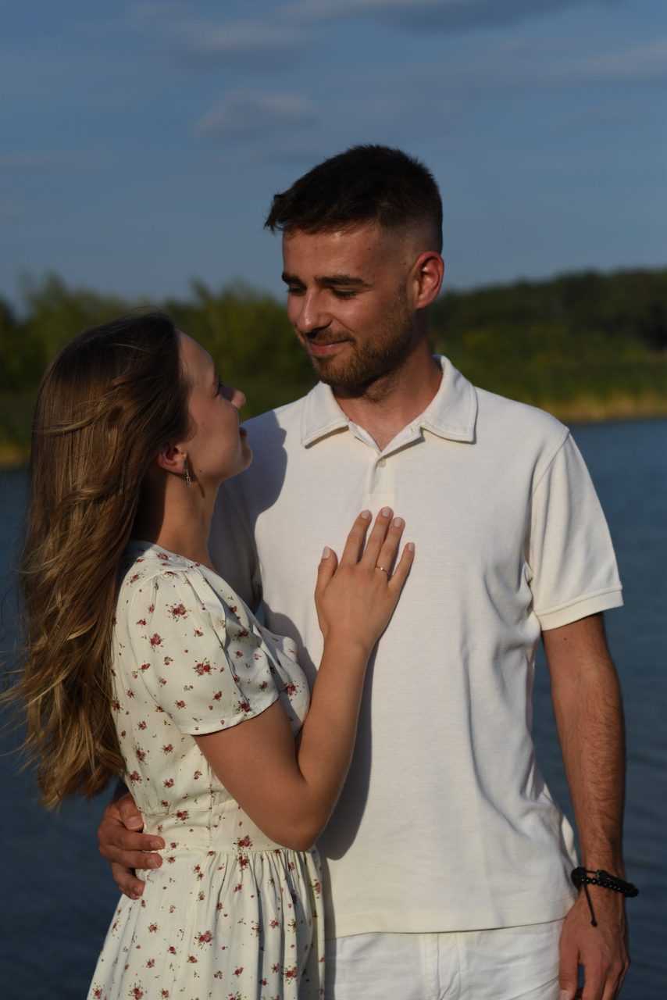

Ceremonia
Kościół Narodzenia NMP w Gaju
ul. Maryjna 6
Ceremonia rozpocznie się o godzinie 15:00.
Na miejscu dostępny jest parking.
11.07.2026
Cieszymy się, że będziecie z nami. Na tej stronie znajdziecie wszystkie najważniejsze informacje organizacyjne dotyczące dnia ślubu i wesela.

Lokalizacje
Ceremonia
ul. Maryjna 6
Ceremonia rozpocznie się o godzinie 15:00.
Na miejscu dostępny jest parking.
Wesele
Pobiednik Wielki 121
Przyjęcie weselne rozpocznie się po ceremonii. Obiekt dysponuje dużym parkingiem dla gości.
Otwórz w Google MapsRozsadzenie gości
Zachęcamy do wcześniejszego sprawdzenia swojego stolika, aby sprawnie zająć miejsca po przybyciu na salę weselną.
Zobacz listę gościPlan wydarzenia
Prosimy o przybycie kilkanaście minut wcześniej, aby spokojnie zająć miejsca przed rozpoczęciem ceremonii.
Powitanie gości, pierwszy toast i wspólne rozpoczęcie świętowania.
Menu klasyczne
Menu wegetariańskie
Dla dzieci
Kolejność składania życzeń według stolików.
Walca wiedeńskiego zatańczy para numer 1 - Gabriela i Kacper.
Menu klasyczne
Menu wegetariańskie
Dla dzieci
Luźne, fajne zabawy, które mają być dodatkiem do dobrej imprezy – a nie obowiązkiem.
👉 Nie będzie żenujących konkursów
👉 Nikt nie będzie do niczego zmuszany
👉 Nie trzeba tańczyć z nieznajomymi, przebierać się ani robić nic „pod publiczkę”
Dla chętnych przewidujemy nagrody rzeczowe dla zwycięzców, więc czasem opłaca się spróbować 😉
🧠 Quiz weselny
Lekki quiz o Parze Młodej, weselnych ciekawostkach albo totalnie luźnych tematach. Bez kompromitacji, za
to z humorem i nagrodami.
🏆 Mini-konkursy
Krótkie, szybkie zabawy, w których można wziąć udział bez wychodzenia z parkietu i bez presji. Kto chce,
ten gra.
O północy zapraszamy na tort weselny. Oczywiście najpierw musimy go pokroić :)
Zapraszamy na zewnątrz, abyście stworzyli dla nas magiczną chwilę w blasku zimnych ogni.
W luźnej i przyjemnej atmosferze.
My też nie lubimy być w centrum uwagi ;)
"Wygrani" zgarniają
prezent - bez tańczenia, bez odpytywania i innych stresów - zatem śmiało dołączajcie! Kto złapie ten
wygrywa 🍾
Atrakcje
📸 Aparat Instax w obiegu
Po weselu zostają wspomnienia… ale jeszcze lepiej, gdy zostają zdjęcia. Instax będzie krążył między gośćmi,
więc śmiało róbcie fotki, przyklejajcie do księgi gości albo zabierajcie ze sobą.
📖 Księga gości
Zostawcie nam kilka słów — życzenia, porady, rysunki. Cokolwiek. Będziemy do tego wracać
latami. Możecie wkleić zdjęcia zrobione Instax-em :)
🧁 Słodki stół
Jeśli dopadnie Was ochota na coś słodkiego, wpadajcie tutaj. Ciasta, desery, małe słodkie bomby — pełna
dyspensa cukrowa.
🥨 Stół z przekąskami
Dla tych, którzy lubią podjadać między tańcami. Wędliny, sery, chrupiące rzeczy — same proste, dobre
klasyki.
🍕 Pizza z pieca opalanego drewnem
Tak, będzie prawdziwa pizza robiona na miejscu. Prosto z pieca, pachnąca dymem i gotowa do zniknięcia w
kilka sekund.
🧘♂️ Strefa chill w ogródku
Jeśli chcecie na chwilę odpocząć od muzyki, złapać oddech, pogadać albo po prostu posiedzieć w spokoju —
ogródek jest do Waszej dyspozycji.
Drink bar
Do Waszej dyspozycji są profesjonalni barmani, którzy przygotowali dla Was 8 koktajli alkoholowych oraz 3 koktajle bez alkoholu - również dla najmłodszych!.
Pornstar martini
%, marakuja, limonka, prosecco waniliaROYAL MOJITO
%, mięta, limonka, słodycz, proseccoWHISKY SOUR
%, limonka, słodycz, angustura, białkoAPEROL SPRITZ
%, prosecco, woda gazowana, pomarańczaELDER FLOWER COLLINS
%, limonka, kordiał biały bez, sodaCAIPIROSKA
%, pomarańcza, kordiał, limonkaCRACOW MULE
%, limonka, imbir, bitterWILD FIZZ
%, truskawka, pomarańcza, wild tonikCUCUMBER FRESH
czarny bez, ogórek, limonka, sodaSTRAWBERRY MOJITO
mięta, limonka, truskawka, sodaELITE LEMONADE
cytrusy, słodycz, sodaWasze zdjęcia
Zrobiliście własne zdjęcia lub filmiki? Podzielcie się nimi!
Poniższy przycisk otworzy folder na dysku Google, do którego każdy z gości może przesłać własne zdjęcia i filmiki.
Otwórz Dysk GoogleTransport
Przejazd na salę weselną
Dla chętnych będzie dostępny autokar z kościoła na salę weselną.
Powrót do domu
Do Waszej dyspozycji będzie kierowca 6-osobowego mini busa wykonujący nocne kursy powrotne po zakończeniu zabawy. Skontaktujcie się z nim gdy zechcecie wrócić do domu.
Kierowca Łukasz | 505 606 707
Prezenty
Największym prezentem jest Wasza obecność!
Jeśli jednak macie ochotę nas czymś obdarować, zamiast kwiatów chętnie przyjmiemy zdrapkę lub kupon do Lotto — może uda nam się trafić wspólne marzenia!